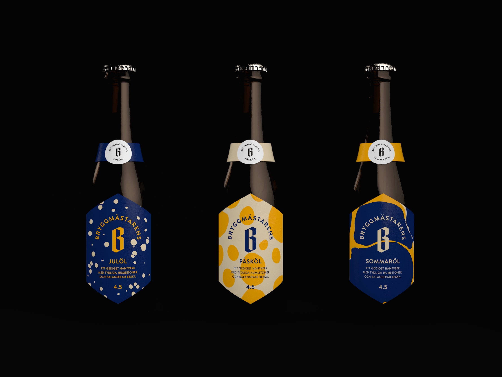

Bryggmästaren
Åbro is one of Sweden's largest breweries. This was a submission for their rebrand of 'Bryggmästarens', a brand of beers made with better ingredients and more brewing time than Åbro's standard product range.
The brief asked to position the brand as more 'premium' and to fully rethink the logotype, label, and bottle design to create a visual system that scales as they add more styles of beer to the 'Bryggmästarens' brand.

